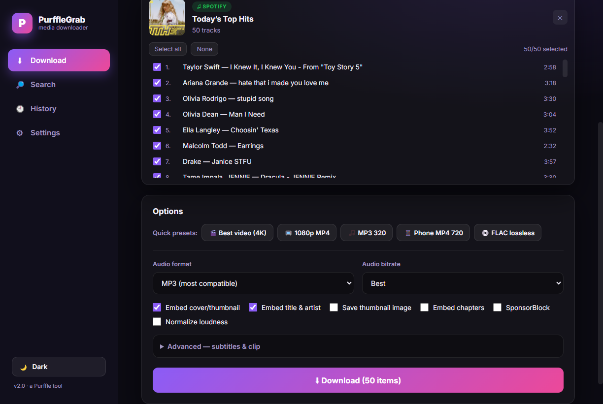
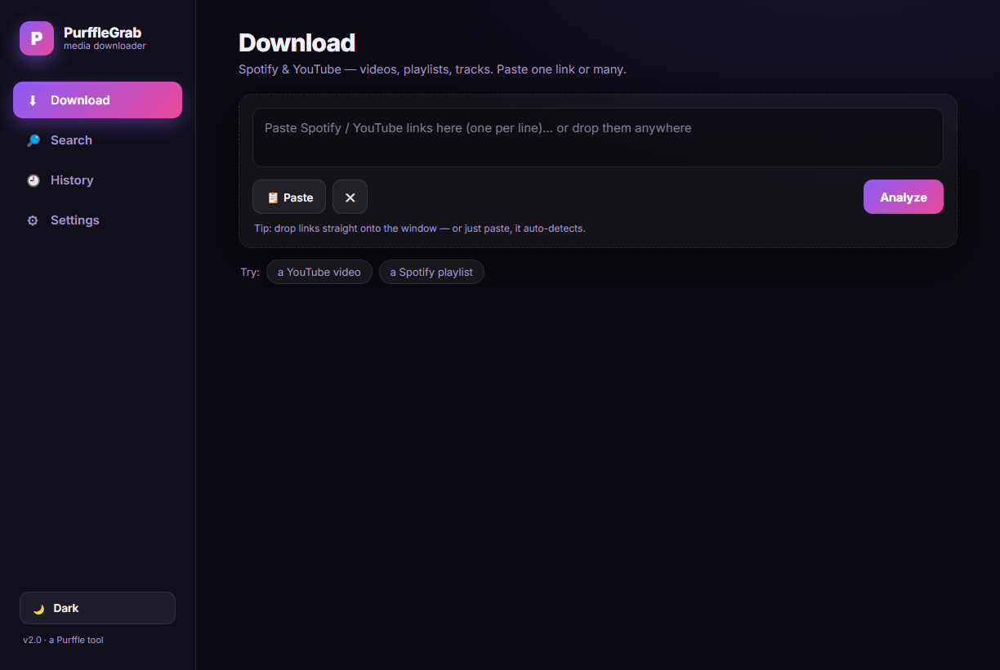
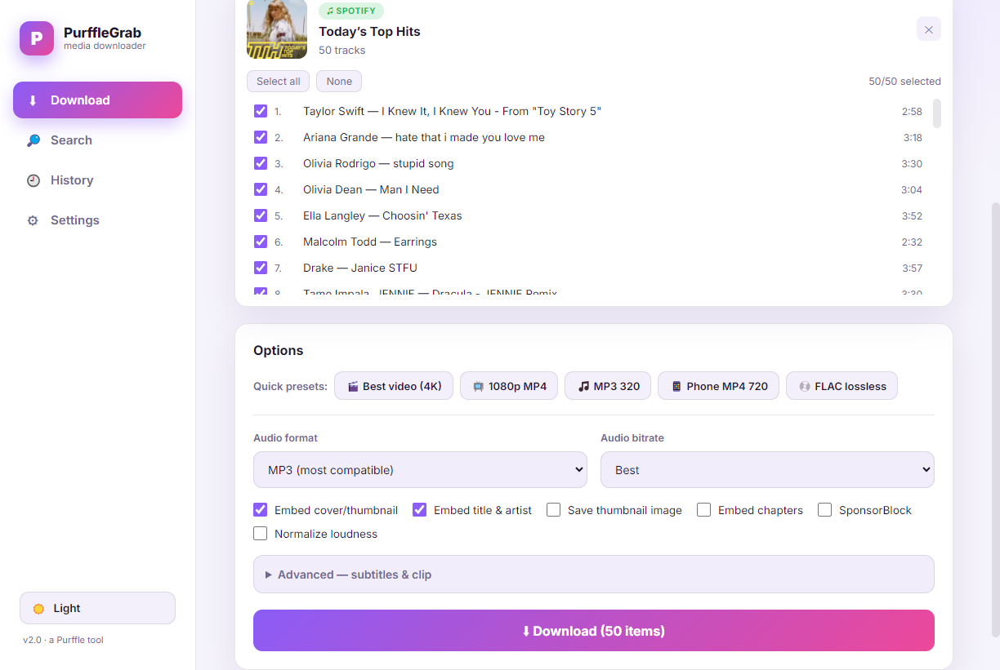
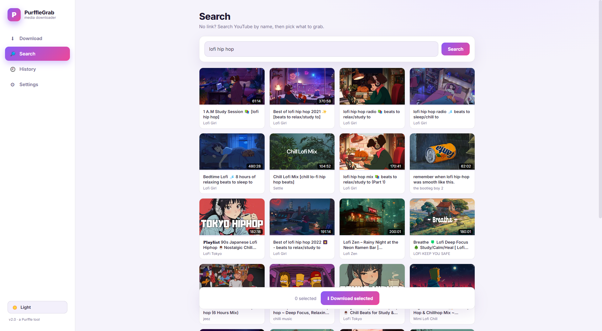

Download Spotify playlists, YouTube videos and music to MP3, MP4 or 4K — in one click. No ads, no account, nothing extra to install.
⬇ Download for Windows — Free
One clean app for Spotify and YouTube — videos, playlists and music, your way.
Download any video or whole playlist as MP4 — 4K, 1080p, 720p — or audio only.
Grab tracks & playlists with the right title, artist and album cover automatically tagged.
Paste many links at once or drop them on the window. Pick exactly which playlist tracks you want.
4K · 1080p MP4 · MP3 320 · Phone 720 · FLAC lossless. No guesswork.
SponsorBlock, subtitles, clip/trim, loudness normalize, embed chapters & thumbnails.
Runs 100% on your PC. No sign-up, no ads, no limits, fully open source.



A Spotify or YouTube URL — one or many.
Video or audio, quality, and which tracks.
Saved to your Music folder, ready to play.
Yes — completely free and open-source. No ads, no accounts, no limits.
Paste the playlist link, click Analyze, choose Audio → MP3, tick the tracks you want, and click Download.
Yes — choose the Best video (4K) preset or set quality to 2160p.
No. FFmpeg and the yt-dlp engine are bundled inside the installer.
PurffleGrab is open-source — you can read every line of code on GitHub. It runs locally and uploads nothing.
Install on Windows in seconds. Spotify, YouTube, playlists, 4K, MP3 — all in one app.